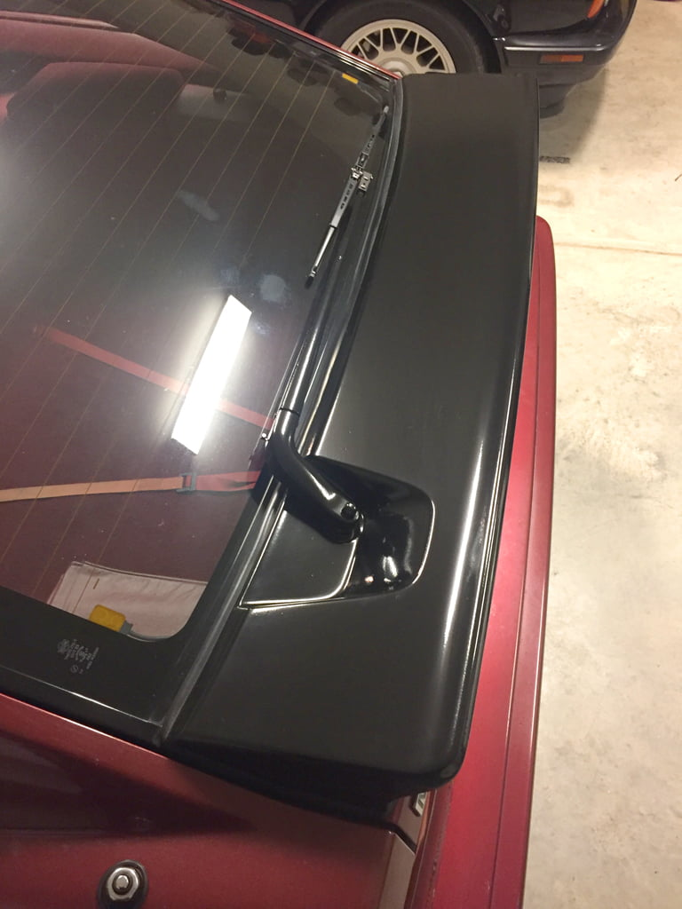
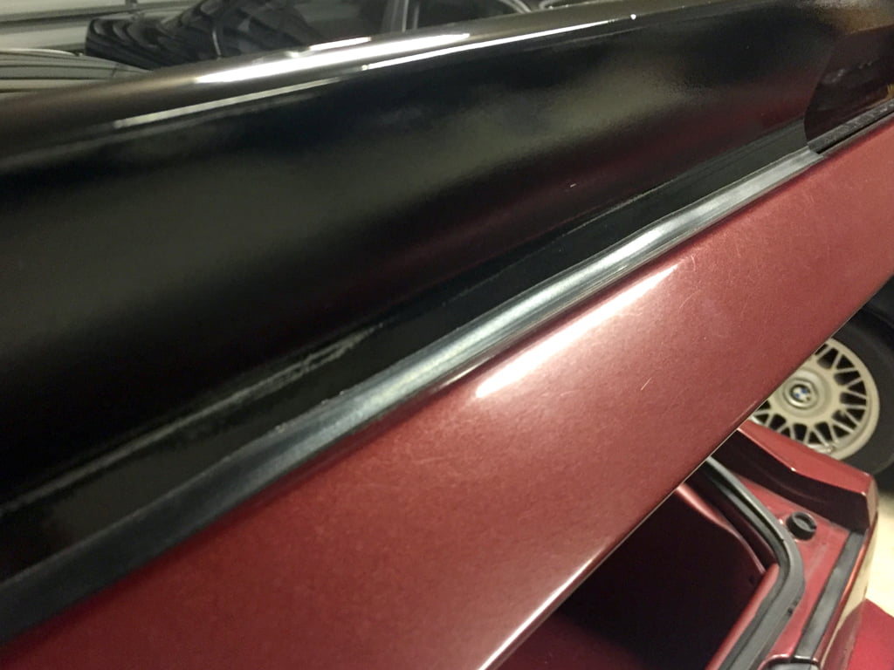
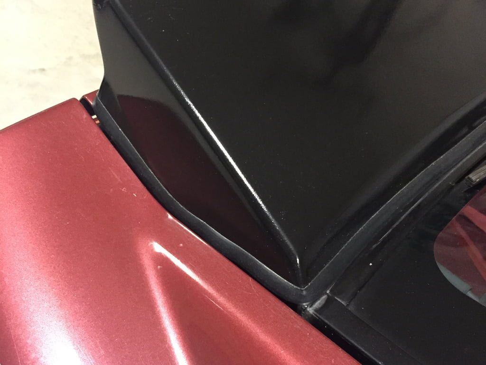

-
Finally located a replacement spoiler. It's a seven bolt from an 88, but the spacer (gasket) shrunk most likely from being out in the sun. The part no. is 90410J but it's NLA. Does anyone know a suitable replacement? -
-
I'm using trim that's made for Toyota 4Runners and LandCruisersâ -- goes between the fender flare and body. Here's how it works out on the Z31â -- not perfect, but very acceptable… 


1987 GL Slicktop | SS 729 Under Renovation -
Where can I find myself a 87-88 rear spoiler?? So hard to find one…lol -
Put up a WTB ad here in the forums or on the facebook buy/sell page. Shouldn't be too hard to find, I've given 2 of them away locally in the past.
Holy crap dude, that is so much better than the dried up and cracked seals that are typical. That could be pulled off as OEM.Originally posted by dgz32 View Post
More importantly, that scratches that attention to detail itch that constantly irritates the fuck out of me.
Where did you purchase it from?
Is it the same as these:
http://www.yotatech.com/f126/adding-…4runner-75761/
https://www.amazon.com/Genuine-Toyot…/dp/B00GKGYI8ILast edited by Z_Karma; 11-22-2016, 11:28 AM.
84 AE/Shiro #683/Shiro #820/84 Turbo -
Brand is Trim-Lok. That looks like the same thing in the first link with the 3m tape on the inside lip. Difficult to tell in the second one. I ordered it from this guy â> http://miataroadster.com/trimlok/tri…i-1999990.aspxOriginally posted by Z_Karma View Post
He sells it at $1.50/ft. I ordered 10 ft as I wasn't sure how it was gonna work out. At the time I was looking, I could only find it in bulk.
1987 GL Slicktop | SS 729 Under Renovation

Copyright © 2006–. All rights reserved. Privacy Policy